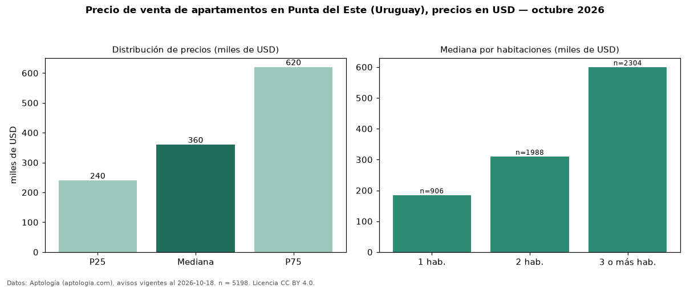

Precio de venta de apartamentos en Punta del Este (Uruguay), precios en USD — octubre 2026
USD 360.000 es el precio mediano de apartamentos en venta en Punta del Este (Uruguay) (n = 5.198 avisos). Por metro cuadrado, la mediana es USD 3.604/m² (n = 4562 avisos con área). Por precio mediano es la ciudad 1 de 3 de Uruguay con al menos 30 avisos de apartamentos en venta (USD). Tiene 14 barrios con al menos 30 avisos de apartamentos en venta; la más cara es Manantiales (USD 775.000) y la más económica Cantegril (USD 191.408). La mediana de toda la vivienda en venta de Punta del Este (USD) es USD 480.000; los apartamentos quedan −25 %. La mitad central de los avisos va de USD 240.000 a USD 620.000 (razón 2,6), una dispersión alta. El área mediana anunciada es 104 m². El segmento con más oferta es el de 3 o más habitaciones (2.304 avisos, mediana USD 600.000); pasar de 1 habitación a 3 o más habitaciones cambia la mediana +224 %. Datos: Aptología (aptologia.com), CC BY 4.0 — https://www.aptologia.com/uy/venta/punta-del-este. Archivos: PDF, CSV con las cifras y gráfica PNG.

| Avisos únicos | 5198 |
|---|---|
| Percentil 25 | COP 240.000 |
| Mediana | COP 360.000 |
| Percentil 75 | COP 620.000 |
| Mediana por m² | COP 3.603 |
Fuente: avisos vigentes de portales inmobiliarios recopilados por Aptología, deduplicados (mínimo 30 avisos únicos por celda). Precios pedidos, no cerrados. Fecha: 2026-10-18.